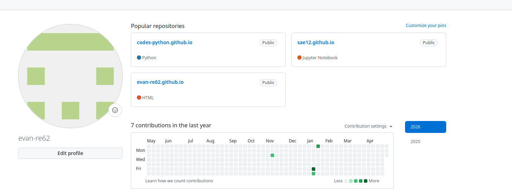

AC13.01 - Utiliser un système informatique et ses outils
Ce que j’ai fait : Utilisation d’un environnement de développement et d’outils système.
Pourquoi : Pour être efficace dans le développement et la gestion de projets.
Comment : Utilisation de VS Code, terminal et outils de gestion de fichiers.
Difficultés : Maîtrise des commandes système.
Ce que j’en ai appris : Autonomie dans l’environnement informatique.
Ce que je ferais autrement : Approfondir les commandes avancées.
AC13.02 - Lire, exécuter, corriger et modifier un programme
Ce que j’ai fait : Analyse et correction de programmes existants.
Pourquoi : Comprendre le code et améliorer son fonctionnement.
Comment : Débogage, tests et modifications de scripts.
Difficultés : Identifier les erreurs logiques.
Ce que j’en ai appris : Lecture et compréhension du code.
Ce que je ferais autrement : Tester plus systématiquement chaque fonction.
AC13.03 - Traduire un algorithme dans un langage donné
Ce que j’ai fait : Conversion d’algorithmes en code Python et JavaScript.
Pourquoi : Transformer une logique en programme exécutable.
Comment : Pseudocode puis implémentation.
Difficultés : Traduction des structures complexes.
Ce que j’en ai appris : Passage de la logique au code.
Ce que je ferais autrement : Mieux structurer les algorithmes avant codage.
AC13.04 - Connaître l’architecture d’un site Web
Ce que j’ai fait : Étude des technologies web (HTML, CSS, JS).
Pourquoi : Comprendre le fonctionnement des sites web.
Comment : Création de pages web simples.
Difficultés : Organisation des fichiers et scripts.
Ce que j’en ai appris : Structure d’un site web moderne.
Ce que je ferais autrement : Utiliser des frameworks plus tôt.
AC13.05 - Choisir les mécanismes de gestion de données
Ce que j’ai fait : Étude des bases de données et structures de données.
Pourquoi : Stocker et organiser efficacement les informations.
Comment : Utilisation de SQL et fichiers structurés.
Difficultés : Choix entre différentes solutions de stockage.
Ce que j’en ai appris : Importance du bon modèle de données.
Ce que je ferais autrement : Comparer plusieurs solutions avant de choisir.
AC13.06 - Travail collaboratif en développement
Ce que j’ai fait : Travail en équipe sur des projets de programmation.
Pourquoi : Apprendre à collaborer sur un projet informatique.
Comment : Utilisation de Git et GitHub.
Difficultés : Gestion des conflits de code.
Ce que j’en ai appris : Importance du travail en équipe.
Ce que je ferais autrement : Mieux organiser les branches Git.
📁 Annexes & Ressources Complémentaires
📸 Image :

🎥 Démonstration vidéo : (cliquer sur "Regarder la vidéo sur Youtube")
🔗 Liens utiles :
Mes différents programmes Python ↗